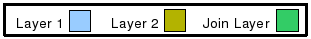
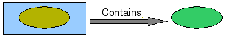
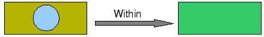

Spatial Join Operation¶
Creates a new layer containing the features from the second layer that match the indicated spatial relation., following this standard:
First Layer Relation Second Layer
The colour convention used to represent the different layers are:

The different Spatial Join Geom operations are:
Contains¶
Features in the Second Layer lie in the interior of features of the First Layer (the inverse of Within). Example:

Crosses¶
The Features share some but not all interior points, and the dimension of the intersection is less than that of at least one of the Features. Example:


Intersects¶
The Features have at least one point in common (the inverse of Disjoint). Example:
Overlaps¶
The Features share some but not all points in common, and the intersection has the same dimension as the Features themselves. Example:


Within¶
Features in the First Layer lie in the interior of the Features in the Second Layer. Example:

Sample Usage¶
Go to the Spatial Operations View, and select Join Geom from the Operation drop down. The Join Geom operation’s specific input options will show up.
- Select the *First Source Layer*: On the First Layer drop down, select the first Layer you want to Join. By default, the currently selected Layer in the Layers View will be chosen for you.
- Select the *Relation*: On the Relation drop down, select the Relation to be used to Join the two layers.
- Select the *Second Source Layer*: On the Second Layer drop down, select the second Layer you want to Join. By default, none will be selected.
- Select the *Result Layer*: On the Result Layer box, select the name of the Layer you want to create containing the Spatial Join Operation Result. You will be proposed a default name for that Layer.
- Perform the operation: Now you’re ready to go. Press the Perform button from the View’s tool bar and the operation will begin.